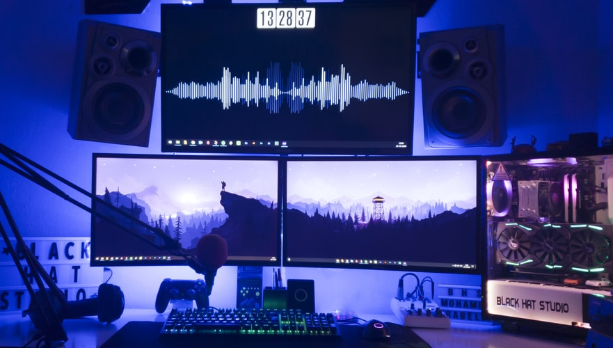

En este blog, presentare sobre los fundamentos básicos de la programación. La programación se construye sobre una lógica algorítmica, es decir, sobre un procedimiento compuesto por pasos y estructurado en el ingreso y la salida de datos. Sobre este proceso se efectúan operaciones matemáticas, basadas en álgebra booleana que procesan variables binarias. Estas acciones permiten comparar, clasificar y relacionar la información con el fin de inferir resultados específicos según se requiera. El Curso de Pensamiento Lógico y el Curso básico de Algoritmos te adentrará en las estructuras de pensamiento fundamentales que cualquier programador debe tener.
Los desarrolladores usan lenguajes de programación que les permiten convertir los algoritmos en instrucciones que el computador puede ejecutar. Estos lenguajes son un conjunto de reglas sintácticas y morfológicas sobre un alfabeto que funcionan como un Estándar de comunicación con la máquina. Según la necesidad o la complejidad de los algoritmos o instrucciones, se usan diferentes lenguajes y cada uno opera con un conjunto de reglas y estructuras distintos. Estas estructuras permiten acceder a variables, funciones, objetos, cadenas y otras herramientas que procesan la información. El curso de Programación Básica, el de Programación Estructurada y el de POO te permitirán introducirte en las principales estructuras de los lenguajes de programación.
Blog Profesional
Diseñamos el Logo y Pagina Web de su negocio, nos encargamos de diseñar y promover la imagen corporativa de su empresa, idea o emprendimiento, un negocio exitoso inicia con un buen diseño! Paginas Web que te encantaran. NOSOTROS Somos una empresa dedicada al desarrollo web, expertos en creación de páginas y aplicaciones web a la medida enfocándonos en tus necesidades. Te ayudamos a crear sitios web que hacen crecer tu empresa, conoce nuestros servicios
soy un profesional apasionado por la programacion si quieres tener un sitio web que se , adapte a todos los dispostivos moviles te aseguro que llegaste al lugar correcto quieres un. diseño profesional contactame, atraves de mis redes sociales que se encuentran al final de mi sitio web 🙈.